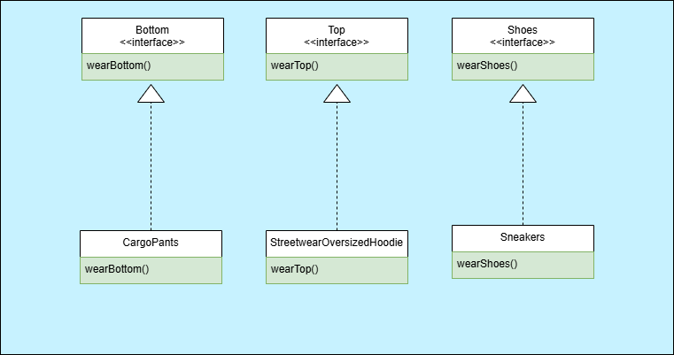

За
създаване на поредица от
свързани или зависими обекти, без да се посочват техните конкретни класове. Обикновено
създадените класове изпълняват един и същ интерфейс. Клиентът на абстрактната фабрика не се
интересува от това как се създават тези обекти, той просто знае как вървят заедно.
Пример:
Искаме да създадем приложение за мода и облекла. Имаме различни стилове на облекло като
Streetwear,
Formal, Sport и т.н. Всеки един от стиловете има различни атрибути и
характеристики. Три са основните компонента на един "аутфит": горна част, долна част и обувки.
Фигура 1. UML диаграма на Абстрактна фабрика.

Фигура 2. UML диаграма на дрехите.
<?php
namespace DesignPatterns\Creational\AbstractFactory;
interface ClothesFactory {
public function createTop(): Top;
public function createBottom(): Bottom;
public function createShoes(): Shoes;
}
class StreetwearFactory implements ClothesFactory {
public function createTop(): Top {
return new StreetwearOversizedHoodie();
}
public function createBottom(): Bottom {
return new CargoPants();
}
public function createShoes(): Shoes {
return new Sneakers();
}
}
interface Top {
public function wearTop(): string;
}
interface Bottom {
public function wearBottom(): string;
}
interface Shoes {
public function wearShoes(): string;
}
class StreetwearOversizedHoodie implements Top {
public function wearTop(): string {
return "Нося oversized hoodie.";
}
}
class CargoPants implements Bottom {
public function wearBottom(): string {
return "Обут с cargo pants.";
}
}
class Sneakers implements Shoes {
public function wearShoes(): string {
return "Обут с маратонки.";
}
}
?>
Код 1. Фрагмент от имплементация на Абстрактна фабрика.
Фрагмента показва как можем да имплементираме абстрактна фабрика за
нашия случай. Имаме интерфейс ClothesFactory, който дефинира методите за
създаване на горна част, долна част и обувки. След това имаме конкретна фабрика
StreetwearFactory, която имплементира интерфейса и създава конкретни класове за всеки от
компонентите на облеклото.
Строител
Приложимост
За
създаване на дизайн, който ви позволява да конструирате сложни обекти стъпка
по стъпка. Шаблонът ви позволява да произвеждате различни типове и представяния на обект, като
използвате един и същ строителен код.
Пример:
Искаме да създадем приложение за рецепти. Имаме различни видове рецепти, които можем да създадем.
Всяка една рецепта е сложна комбинация от съставки и действия.
Фигура 3. UML диаграма на Строител.
<?php
namespace DesignPatterns\Creational\Builder;
abstract class Builder
{
public function startRecipe()
public function addSalt() {}
public function addPork() {}
public function bake() {}
public function fry() {}
public function addWater() {}
}
class Director
{
public function build(Builder $builder): void
{
$builder->startRecipe();
$builder->addSalt();
$builder->addPork();
$builder->bake();
$builder->fry();
$builder->addWater();
}
}
?>
Код 2. Фрагмент от имплементация на Строител.
Фрагмента показва как можем да имплементираме строител за
нашия случай. В този случай режисьорът е наясно как да изгради целия обект, докато строителят се
грижи за създаването на отделните му части. Клиентският код не трябва да знае подробности за
процеса на конструиране на обекта, а само кой конкретен строител да използва. От своя страна,
режисьорът не се интересува от конкретния строител, а единствено от това, че той следва общ
интерфейс и изпълнява необходимите стъпки, когато те бъдат заявени.
Метод фабрика
Приложимост
За
за създаване на обекти чрез специален метод, вместо
директно извикване на конструктора с new. Това позволява на подкласовете да заменят фабричния
метод и да определят какъв тип обекти да се създават. Обектите, създадени от методa, се
наричат продукти и обикновено споделят общ интерфейс или базов клас. Основното предимство на
този подход е, че улеснява разширяването и модификацията на кода, без да се променя
съществуващата логика. Подходът осигурява по-голяма гъвкавост и спазва принципа на
отвореност/затвореност, като позволява добавянето на нови типове продукти, без да се нарушава
съществуващата структура.
Пример:
Искаме да създадем приложение за изпращане на съобщения. Имаме различни видове съобщения, които
можем да създадем.
Например имейли и SMS.
Фигура 4. UML диаграма на Метод фабрика.
<?php
namespace DesignPatterns\Creational\FactoryMethod;
interface Message {
public function send(): string;
}
class EmailMessage implements Message {
public function send(): string {
return "Изпращам имейл.";
}
}
class SMSMessage implements Message {
public function send(): string {
return "Изпращам SMS.";
}
}
interface MessageCreator {
abstract public function createMessage(): Message;
}
class EmailMessageCreator extends MessageCreator {
public function createMessage(): Message {
return new EmailMessage();
}
}
class SMSMessageCreator extends MessageCreator {
public function createMessage(): Message {
return new SMSMessage();
}
}
?>
Код 3. Фрагмент от имплементация на Метод фабрика.
Фрагмента показва как можем да имплементираме Метод Фабрика. Kреационният метод е
createMessage() на интерфейса
MessageCreator. Чрез използването на този интерфейс, създаването на обектите се делегира на
конкретните класове EmailMessageCreator и SMSMessageCreator.
Пул
Приложимост
За
oбединяване на обекти, което може да предложи значително повишаване на производителността. Той е
най-ефективен в ситуации, в които цената за инициализиране на екземпляр на клас е висока,
скоростта на инстанциране на клас е висока и броят на инстанциранията, използвани във всеки един
момент, е нисък.
Пример:
Всяко едно приложение, което използва база данни, може да се възползва от пул. Например,
MySQL и PostgreSQL предлагат пул от връзки към базата данни, тъй като създаването
на тези връзки е "тежка" операция.
Фигура 5. UML диаграма на Пул.
<?php
namespace DesignPatterns\Creational\Pool;
class DatabaseConnection {
private $id;
public function __construct($id) {
$this->id = $id;
echo "Създадена е връзка с ID: {$this->id}\n";
}
public function query($sql) {
echo "Изпълняване на заявка: {$sql} на връзка с ID: {$this->id}\n";
}
}
class ConnectionPool {
private $availableConnections = [];
private $usedConnections = [];
private $maxConnections;
public function __construct($maxConnections) {
$this->maxConnections = $maxConnections;
}
public function getConnection() : DatabaseConnection {
if (count($this->availableConnections) > 0) {
$connection = array_pop($this->availableConnections);
$this->usedConnections[] = $connection;
echo "Използване на съществуваща връзка.\n";
return $connection;
}
if (count($this->usedConnections) < $this->maxConnections) {
$connection = new DatabaseConnection(count($this->usedConnections) + 1);
$this->usedConnections[] = $connection;
return $connection;
}
throw new Exception("Няма налични връзки!");
}
public function releaseConnection($connection) {
$key = array_search($connection, $this->usedConnections, true);
if ($key !== false) {
unset($this->usedConnections[$key]);
$this->availableConnections[] = $connection;
echo "Връзката е върната в пула.\n";
}
}
public function addConnection(DatabaseConnection $connection) {
if (count($this->availableConnections) + count($this->usedConnections) < $this->maxConnections) {
$this->availableConnections[] = $connection;
echo "Добавена е нова връзка към пула.\n";
} else {
echo "Пулът е пълен. Не може да се добави нова връзка.\n";
}
}
public function removeConnection(DatabaseConnection $connection) {
$key = array_search($connection, $this->availableConnections, true);
if ($key !== false) {
unset($this->availableConnections[$key]);
echo "Връзката е премахната от пула.\n";
return;
}
$key = array_search($connection, $this->usedConnections, true);
if ($key !== false) {
unset($this->usedConnections[$key]);
echo "Връзката е премахната от пула.\n";
}
}
}
// Пример за използване на ConnectionPool
$connection = $connectionPool->grtConnection();
$connection->query('SELECT * FROM users');
$connectionPool->releaseConnection($connection);
?>
Код 4. Фрагмент от имплементация на Пул.
Фрагмента показва как можем да имплементираме Пул. Класът DatabaseConnection имитира
връзка с база данни. Той има метод query(), който изпълнява SQL заявка, а
ConnectionPool съхранява и управлява наличните и използваните връзки.
Прототип
Приложимост
За създаване на нови обекти чрез клониране на съществуващи обекти вместо директно създаване чрез
конструктор. Това е полезно, когато създаването на обект е скъпо или сложно. Шаблонът позволява
лесно създаване на копия с различни конфигурации, като същевременно запазва производителността.
Пример:
Искаме да създадем игра. В нея има множество персонажи с подобни характеристики, но с малки разлики.
Вместо
да създаваме всеки персонаж от нулата, можем да клонираме съществуващ обект и да променим само
необходимите свойства.
Фигура 6. UML диаграма на Прототип.
<?php
namespace DesignPatterns\Creational\Prototype;
interface CharacterPrototype
{
public function __clone();
}
class HumanCharacter implements CharacterPrototype
{
private string $name;
private int $health;
private int $strength;
public function __construct(string $name, int $health, int $strength)
{
$this->name = $name;
$this->health = $health;
$this->strength = $strength;
}
public function jump(): string
{
return "{$this->name} скача.";
}
public function __clone()
{
// Клониране на обекта
}
}
class BeastCharacter implements CharacterPrototype
{
private string $name;
private string $kind;
private int $power;
public function __construct(string $name, string $kind, int $power)
{
$this->name = $name;
$this->kind = $kind;
$this->power = $power;
}
public function kill(): string
{
return "{$this->name} убива.";
}
public function __clone()
{
// Клониране на обекта
}
}
?>
Код 5. Фрагмент от имплементация на Прототип.
Фрагмента показва как можем да имплементираме Прототип. Класът HumanCharacter и
BeastCharacter имплементират
интерфейса CharacterPrototype и дефинират метода __clone(), който позволява клонирането на
обектите спрямо логиката в тях.
Опростена фабрика
Приложимост
За със създаването на обект без излагане на логиката на създаване на клиента и препращане към
новосъздадения обект с помощта на общ интерфейс. Нарича се „Опростена фабрика“, защото е лесен
за
разбиране и прилагане. Основната идея зад шаблона "Опростена фабрика" е да се създават обекти,
без да се налага да се указва точният клас на обекта, който ще бъде създаден. Тя се различава от
статичната фабрика, защото не е статична. Следователно можете да имате множество фабрики,
параметризирани по различен начин, можете да го наследявате и да го макетирате (you can mock
it).
Пример:
Искаме да изградим система за логистично управление, която трябва да поддържа множество видове
транспорт като камион, кораб и самолет.
Фигура 7. UML диаграма на Опростена фабрика.
<?php
namespace DesignPatterns\Creational\SimpleFactory;
interface Transport
{
public function deliver();
}
class Truck implements Transport
{
public function deliver()
{
return "Delivery by road in a box";
}
}
class Ship implements Transport
{
public function deliver() {
return "Delivery by sea in a container";
}
}
class Plane implements Transport
{
public function deliver() {
return "Delivery by air in a cargo";
}
}
class TransportFactory
{
public function createTransport($type) : Transport
{
return match ($type) {
'truck' => new Truck(),
'ship' => new Ship(),
'plane' => new Plane(),
default => throw new Exception("Invalid transport type"),
};
}
}
?>
Код 6. Фрагмент от имплементация на Опростена фабрика.
Във фрагмента чрез TransportFactory можем да създаваме различни типове транспортни обекти, без
да знаем конкретните класове. Това прави нашия код по-гъвкав и по-лесен за поддръжка.
Сингълтън (Сек)
Приложимост
За ограничаване на инстанцирането на клас до един обект, което може да бъде полезно, когато се
изисква само един обект в цялата система. Сингълтоните са проектирани да гарантират, че има
единична инстанция на клас и това е глобална точка на достъп за него, имаме глобален достъп и
мързелива инициализация. Използва се за управление на ресурси, които не могат да бъдат
инстанцирани многократно, като например пулове от връзки, кешове и т.н.
Пример:
Искаме да създаден приложение, което ще използва множество заявки към външни API-та. За да подобрим
производителността ще използваме кеширане на данните. За целта можем да създадем клас, който ще
кешира данните и ще предоставя глобален достъп до тях.
Фигура 8. UML диаграма на Сингълтън.
<?php
namespace DesignPatterns\Creational\Singleton;
class Cache
{
private static $instance;
private function __construct()
{
}
public static function singleton()
{
if (!isset(self::$instance)) {
self::$instance = new __CLASS__;
}
return self::$instance;
}
}
$cache1 = Cache::singleton();
$cache2 = Cache::singleton();
$cache3 = Cache::singleton();
?>
Код 7. Фрагмент от имплементация на Сингълтън.
Във фрагмента имаме класа "Cache", който е сингълтън. Той има статичен метод singleton(), който
проверява дали вече е създаден обект от класа. Ако не е, той създава нов, ако е, просто връща
съществуващия. По този начин можем да имаме само един обект от класа "Cache". Също така сме
направили неговия конструктор с ограничен достъп, за да предотвратим създаването на множество
инстанции.
Статична фабрика
Приложимост
Подобно на Абстрактната фабрика, този модел се използва за създаване на поредица от свързани или
зависими обекти. Разликата между този и абстрактния фабричен модел е, че статичният фабричен
модел използва само един статичен метод, за да създаде всички видове обекти, които може да
създаде. Обикновено се нарича factory или build.
Пример:
Искаме нашето приложение да има логване на грешки. Имаме различни видове логване във: файл, база
данни, конзола.
Фигура 9. UML диаграма на Статична фабрика.
<?php
namespace DesignPatterns\Creational\StaticFactory;
interface Logger
{
public function log(string $message): void;
}
class FileLogger implements Logger
{
public function log(string $message): void
{
echo "Logging to a file: $message\n";
}
}
class DatabaseLogger implements Logger
{
public function log(string $message): void
{
echo "Logging to a database: $message\n";
}
}
class ConsoleLogger implements Logger
{
public function log(string $message): void
{
echo "Logging to a console: $message\n";
}
}
class LoggerFactory
{
public static function createLogger(string $type): Logger
{
return match ($type) {
'file' => new FileLogger(),
'database' => new DatabaseLogger(),
'console' => new ConsoleLogger(),
default => throw new \InvalidArgumentException("Unknown logger type: $type"),
};
}
}
?>
Код 8. Фрагмент от имплементация на Статична фабрика.
Във фрагмента имаме интерфейса Logger, който дефинира метода log(). Имаме три класа, които
имплементират интерфейса: FileLogger, DatabaseLogger и ConsoleLogger. Класът LoggerFactory има
статичен метод createLogger(), който приема тип на логера и връща инстанция на съответния клас.
Чрез този метод и без инстанция на фабриката можем да създаваме различни типове логери, без да
знаем конкретните класове.